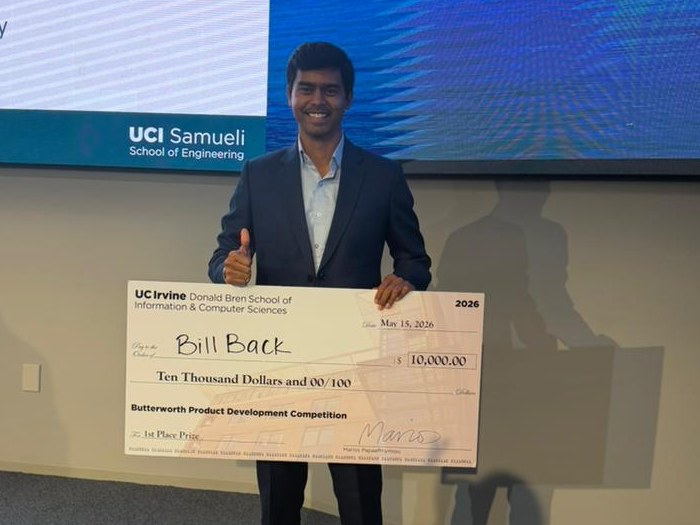

UC Irvine · 2025–26 · 0→1 product
BillBack — an AI assistant that disputes medical bills for you
A six-month build against MBA and engineering teams, entered in two competitions and improved between them. We shipped a live product that flags billing errors and writes the dispute letter.
Problem
Billing errors are common, but almost nobody contests one — reading an itemized statement and grounding a dispute is expert work.
What I did
Owned product definition and the AI pipeline: patient research, error detection against billing codes, and cited letter generation. Took it to the USC AI Product Challenge first — framed for TPAs and health plans, with a Recovery Probability Score ranking which errors were worth pursuing — then rebuilt on what the judges pushed back on before entering Butterworth.
Outcome
Third at USC, then first of all teams at Butterworth with the improved build — a working application that flags overcharges and produces a ready-to-send dispute letter. We’re still building on it.

First place, Butterworth Product Development Competition. The build that came out of a third-place finish at the USC AI Product Challenge earlier that year — reworked on the judges’ feedback, then judged against MBA and engineering teams at UC Irvine’s Donald Bren School of Information & Computer Sciences for the $10,000 first prize.